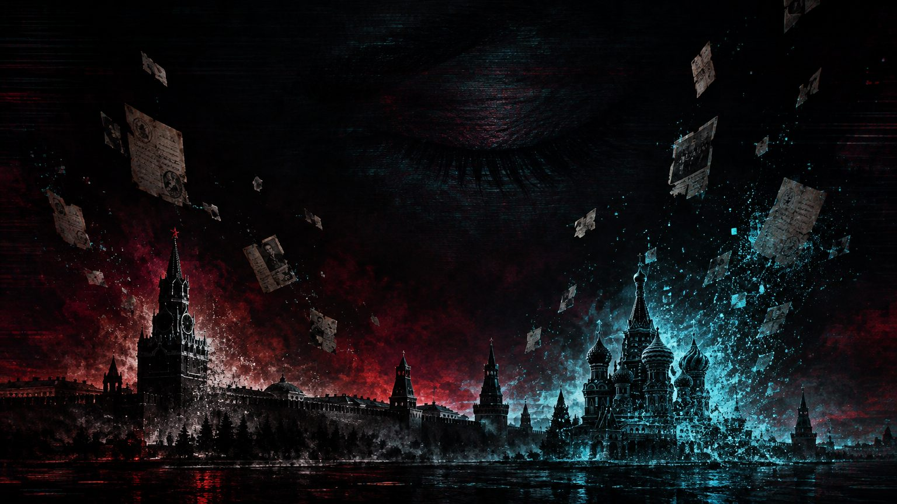

СПЕКУЛЯТИВНЫЙ АРХИВ / МОСКВА 2050
Городпомнит
МОСКВА: НЕПРОВЕРЕННОЕ ПРОШЛОЕ
В 2050 году историю могут реконструировать машины. Но может ли искусственная реконструкция сохранить правду?
Исследуйте прошлое. Сомневайтесь в изображении. Найдите подлинный документ.
ВОЙТИ В АРХИВ→55.7520° с. ш. · 37.6175° в. д. — КРЕМЛЬ · КРАСНАЯ ПЛОЩАДЬ
ЛИСТАЙТЕ, ЧТОБЫ СПУСТИТЬСЯ В АРХИВ ↓
KASPERSKY EARTH 2050 · МОСКВА · ПРОГНОЗ
«3D-реконструкция истории человечества»
Что, если каждое историческое событие можно воссоздать в цифре, а любой человек может участвовать в реконструкции нашего общего прошлого?
Прогноз представляет виртуальную модель мира с трёхмерными реконструкциями исторических событий. Люди добавляют события; ИИ обрабатывает описания, летописи, рассказы и документальные съёмки, чтобы показать, что произошло — или что могло произойти.
ЧИТАТЬ ПРОГНОЗ↗Наш вопрос: что происходит, когда созданные ИИ образы истории становятся заметнее, убедительнее и доступнее подлинных свидетельств?
кто-то придумал это в 2018 году. это предложение, а не воспоминание.
Прошлое, каким его помнит машина
Каждое изображение рассказывает историю. Не каждая история правдива.
01 СМОТРИ
В каждой реконструкции спрятан предмет, который помнит иначе.
02 НАЙДИ
Наведите, чтобы найти его. Нажмите, чтобы открыть подлинный документ.
03 ВЕРНИСЬ
Каждое раскрытие обратимо. Сравните обе версии прошлого.
Некоторые вещи становятся видны, только когда мы решаем присмотреться.
нажмите на глаз, чтобы открыть его ↑
СМОТРИТЕ ДАЛЬШЕ ИЗОБРАЖЕНИЯ.
ИИ может создать убедительный образ прошлого. Но изображение — не доказательство, а реконструкция — не исторический документ.
За каждым реальным событием стоят люди, переживания, документы, воспоминания и истории, которые нельзя просто заменить искусственным изображением.
Технологии помогают исследовать, понимать и рассказывать историю. Но они не могут заменить нашу ответственность — сомневаться, изучать и сохранять её.
Правда заслуживает большего, чем алгоритм.
СОХРАНИМ ПАМЯТЬ ЧЕЛОВЕЧЕСКОЙ
- Проверяйте источник, прежде чем верить изображению.
- Читайте дальше первого результата.
- Ищите подлинные документы и надёжные исторические архивы.
- Учитесь отличать настоящую фотографию от искусственной реконструкции.
- Используйте ИИ как инструмент для исследования, а не как повод перестать сомневаться.
ПРОШЛОЕ МОЖНО РЕКОНСТРУИРОВАТЬ.
ПРАВДУ НУЖНО СОХРАНИТЬ.
Подлинные источники
Каждый проверенный документ в этом архиве ведёт к источнику с известным происхождением: кто его создал, когда, где он хранится и на каких условиях его можно показывать.
ВИЗУАЛЬНЫЕ СВИДЕТЕЛЬСТВА
ИСТОРИЧЕСКИЕ ИСТОЧНИКИ